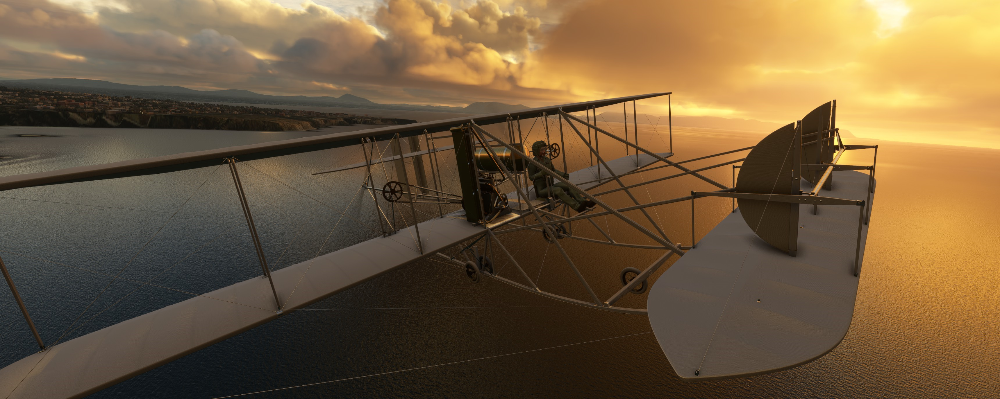
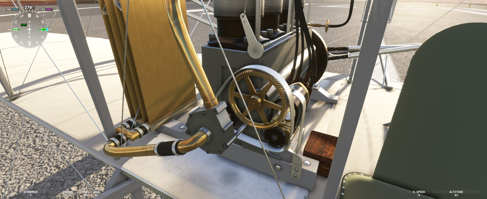
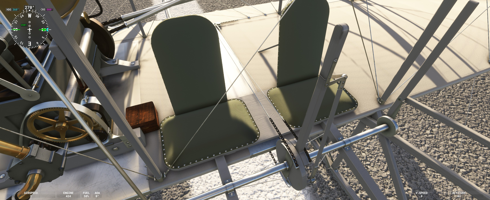
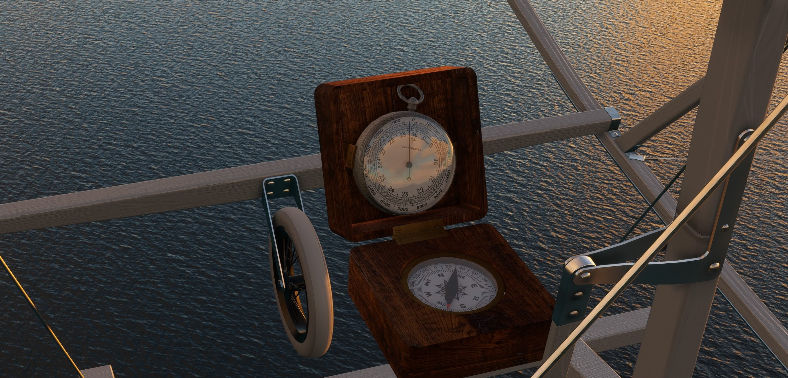
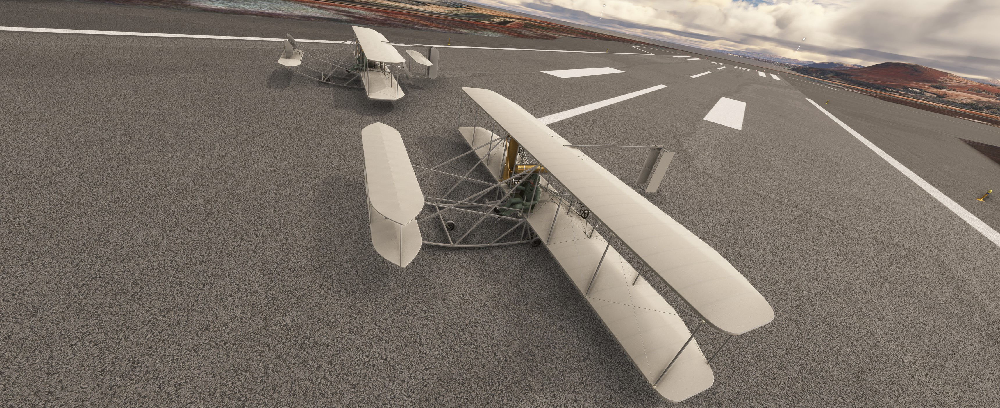
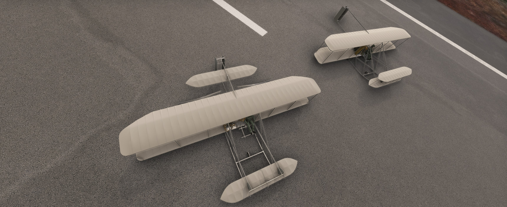

Experience a foundational milestone in aviation history. The world's first military airplane, recreated with unprecedented visual similarity, custom engine logic, and authentic flight models.
Designed and constructed by Wilbur and Orville Wright to satisfy the demanding requirements of the U.S. Army Signal Corps. Its delicate wood-and-muslin construction and entirely unique control system make it an extraordinary, challenging machine to master.


There is no throttle! Bypassing default MSFS parameters, this aircraft runs on custom code with only two modes: IDLE and MAX RPM. Manage the fuel petcock and magneto advance lever to build power.

In place of modern ailerons, lateral control is achieved through wing warping. The wing twist mechanism is historically linked with the rudder, requiring careful coordination to counteract adverse yaw and execute smooth, banked turns.

No glass screens here. Navigate using a wooden box compass, an aneroid barometer/altimeter, and a simple weighted cord (rope) relying entirely on gravity for visual bank angle reference.


The original two-seat, twin-canard configuration. This model accurately reflects the aircraft's extreme pitch instability. The pilot must constantly anticipate and actively "fly" the nose to prevent porpoising, stalls, or dives.
Reflecting later field modifications, this single-seater features a massive 43.3-gallon fuel tank and a rear horizontal stabilizer. The pilot must actively counter a dynamic center of gravity shift as the heavy fuel load burns off.